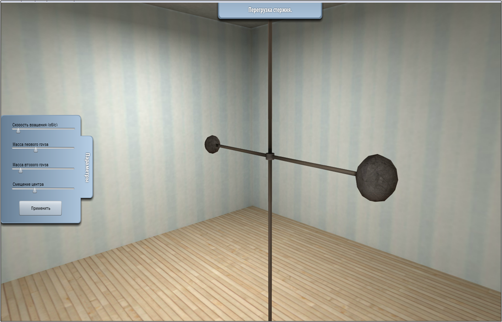
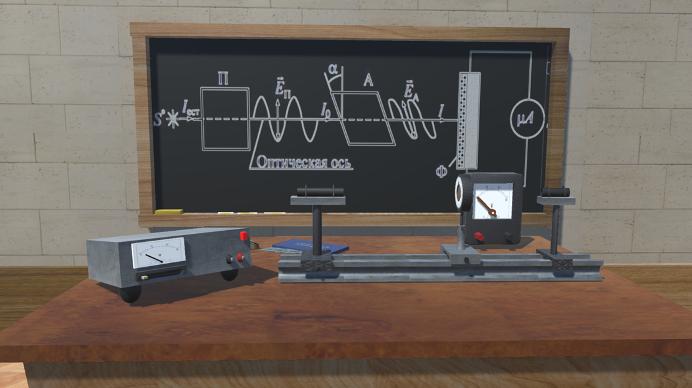

Моделирование является одним из основных инструментов исследования динамических объектов, процессов и явлений в живой и неживой природе. В общем случае методы моделирования ориентированы на решение практических задач с целью получения оптимального решения. Реализация методов математического моделирования должна включать следующие этапы:
Однако всегда существует класс объектов, для которых не разработаны аналитические модели, либо не разработаны математические методы решения полученной модели.

Под термином имитационное моделирование понимают метод исследования, при котором изучаемая система заменяется моделью, с достаточной точностью описывающей реальную систему, с которой проводятся эксперименты с целью получения информации об этой системе. Различие между математической и имитационной моделями заключается в том, что в имитационной модели отношение между «входом» и «выходом» модели может быть явно не задано. В этом случае аналитическая модель заменяется имитатором или имитационной моделью. К имитационному моделированию прибегают, когда:
При имитационном моделировании реальная система, как правило, разбивается на ряд достаточно малых в функциональном отношении элементов или модулей. Затем поведение исходной системы имитируется как поведение совокупности этих элементов, определенным образом связанных в единое целое путем установления соответствующих взаимосвязей между элементами системы. При этом реализация такой модели начинается с входного элемента, далее последовательно проходит по всем элементам цепочки, пока не будет достигнут выходной элемент модели. Цель имитационного моделирования состоит в воспроизведении поведения исследуемой системы на основе результатов анализа наиболее существенных взаимосвязей между ее элементами или, другими словами, разработке симулятора исследуемой предметной области для проведения различных экспериментов.
Имитационное моделирование позволяет имитировать поведение системы во времени, причем временем в модели можно управлять: замедлять в случае с быстропротекающими процессами (модели различных взрывов) и ускорять для моделирования систем с медленной изменчивостью (модели роста леса). Имитационная модель рассматривается как специальная форма математической модели, в которой:
Одним из главных достоинств систем визуального моделирования является то, что они позволяют создавать на компьютере удобную среду, в которой можно создавать виртуальные функционирующие системы и проводить эксперименты с ними. При этом графическая среда становится похожей на физический испытательный стенд, только вместо тяжелых металлических ящиков, кабелей и реальных измерительных приборов, осциллографов и самописцев пользователь имеет дело с их образами на экране дисплея.